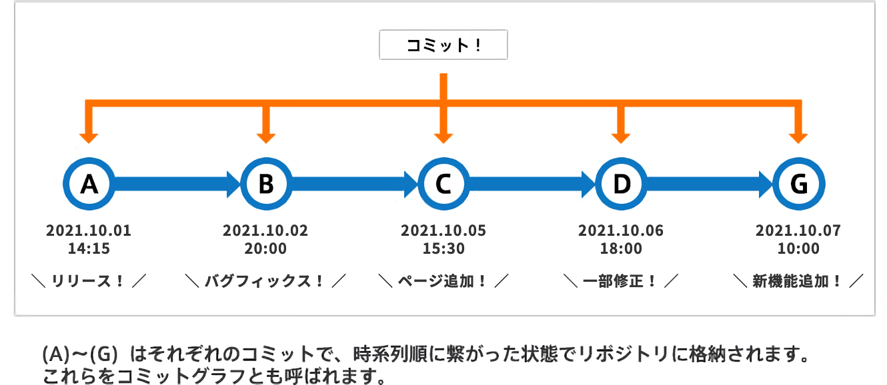

第1回
Gitに関して
Gitとは、分散型のバージョン管理システムで、ファイルやコードなどのバージョン管理が簡単にできるツールです。
グループ内でファイルの共有、ファイルの変更点の同期、ファイルのバックアップ（変更点を同期）などの機能があります。
Gitは「Global Information Tracker (グローバルインフォメーショントラッカー)」の頭文字を取ったもので、
包括的に変更履歴情報の追跡を行うツールという意味です。
リポジトリ
リポジトリとは、ファイルやディレクトリの状態を記録する場所のことを指します。
リモートリポジトリ
ネットワーク上やファイル上に存在し、複数の利用者で共有することができます。
また、ローカルリポジトリの変更をリモートリポジトリへ反映して共有管理ができます。
ローカルリポジトリ
ユーザーがローカルマシン上で作業するリポジトリのことです。
コミット
コミットとは、ファイルやディレクトリの追加変更をリポジトリに記録する操作の事で、
実行することでリポジトリ内に現在から過去までのコミットグラフ（履歴）が作成されます。


コミットは時系列順に繋がった状態でリポジトリに格納されるので、変更を辿ることで過去の変更履歴やその内容を知ることができます。
また、コミット実行の際に、メッセージを日付など自分や他の作業者に分かりやすいように書くと良いです。
HTMLに関して
htmlとは、HyperText Markup Languageの略で、文章の構成や役割を示すマークアップ言語の1つです。
コンピューターへ構成指示を出し、表示したい文章や写真などの情報を形作り、自分でWebサイトを作ることができます。
タグ
タグとは、テキストに意味を与える目印のことを言います。
コンピューターに文章構造を理解させるために必要で、意味ごとに文字や記号を括って、Webサイトを作成します。
要素
要素（element）とは、見出しや段落などマークアップしたい対象の文字列を、タグで囲んだ情報の単位のことです。
属性
属性とは、htmlの要素に追加する情報のことです。
URLや動画など複雑な表示をしたい場合に、要素のみでは情報不足になるので、属性を追加することで情報を補うことができます。